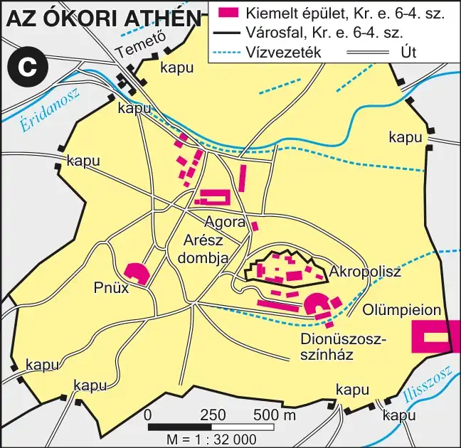

A polisz és az arisztokratikus köztársaság
Be tudod mutatni Athén poliszként való kialakulását, a királyság megszűnését és az arisztokratikus köztársaság működését, valamint Drakón törvényeinek jelentőségét.
Athén poliszként való kialakulása
Athén az Attikai-félszigeten jött létre, mintegy 5 km-re a tengertől — kikötője Pireusz volt. A város magja az Akropolisz (fellegvár), amely már a mükénéi korban is létezett, és amely a Kr. e. VIII. századra a település politikai és vallási központjává tette a poliszt (városállamot). A hagyomány szerint Thészeusz egyesítette Attika településeit, és a lakosságot három foglalkozási csoportba osztotta: az arisztokraták (eupatridák — „jó apától származók”), a földművesek (georgoszok) és a mesteremberek (demiurgoszok).
A polisz merőben új szerveződést jelentett: a földek tulajdonosai szövetkeztek, magukénak tekintették az államot, ezért az irányításába is beleszóltak. A tulajdon így egyet jelentett a polgárjoggal, az pedig a politikai jogokkal.
Az arisztokratikus köztársaság
A Kr. e. VIII. században megszűnt a királyság. A várost ezután az arisztokrácia vezette: közülük kerültek ki az arkhónok, a legfőbb hivatali méltóság viselői. A tisztség fokozatosan demokratizálódott a maga korlátozott módján: kezdetben 1, később 3, végül 9 arkhón volt; kezdetben élethossziglan, majd 10 évig, végül 1 évig töltötték be a tisztséget. A volt arkhónokból jött létre az arisztokratikus vének tanácsa, az Areioszpagosz, amely az Árész-domb szikláin ülésezett.
A társadalom tagozódása a származás (vérségi elv) szerint történt, a konfliktusokat gyakran vérbosszúval oldották meg. Jelentős változást hozott a szokásjog írásba foglalása: Drakón arkhón Kr. e. 621-ben törvénybe foglalta a jogszokásokat. A törvények rendkívül szigorúak voltak — innen ered a „drákói szigor” kifejezés —, és bár az arisztokrácia érdekeit védték, mégis gátat szabtak az önkényes jogértelmezésnek és a vérbosszúnak.
Kötelező adatok
| Fogalmak | Személyek, évszámok | Topográfia |
|---|---|---|
| Akropolisz, városállam/polisz, arisztokrácia, démosz, arkhón, Areioszpagosz | Drakón (Kr. e. 621, törvényírás) Kr. e. VIII. sz.: a királyság megszűnése |
Athén, Attika, Pireusz |
1. forrás
Az ókori Athén
A polisz legfontosabb közösségi és politikai terei azonosíthatók rajta.

A törvények szerint a szándékos emberölés büntetése halál, a lopásé pedig sok esetben szintén ez volt — innen ered a törvények szigorára utaló kifejezés. A törvény ugyanakkor részletesen szabályozta a gyilkossági ügyek kivizsgálását: a vádlottnak lehetősége nyílt védekezésre az Areioszpagosz előtt, és különbséget tettek a szándékos és a véletlen emberölés között. A törvény ezzel véget kívánt vetni annak a korábbi gyakorlatnak, hogy az áldozat családja saját belátása szerint álljon bosszút a tettesen.
- Nevezze meg a forrás alapján, milyen korábbi szokást kívánt felváltani Drakón törvénykezése!
- Milyen jelentősége volt annak, hogy a törvényeket írásba foglalták?
- Kinek állt elsősorban érdekében a szigorú, de kiszámítható jogrend? Indokolja válaszát!
Ellenőrző feladatok
Szolón reformjai
Be tudod mutatni, mi váltotta ki a démosz elégedetlenségét, és részletesen ismerteted Szolón Kr. e. 594-es reformjait: az adósrabszolgaság eltörlését, a vagyoni osztályokat és az új intézményeket.
A démosz megerősödése
A Kr. e. VIII. századtól kibontakozó görög gyarmatosítás, valamint az ezáltal fellendülő hajózás és kereskedelem alapjaiban rengette meg Athén társadalmát. A gyarmatokról behozott olcsó gabona csökkentette az arisztokrácia súlyát a gabonaellátásban; közben felemelkedett és meggazdagodott egy széles ipari, kereskedő és hajótulajdonos réteg, amely a démosz (köznép) jogi egyenlőségéért szállt síkra. A hadviselésben is átrendeződés zajlott: az arisztokraták költséges lovas-szekeres hadviselését háttérbe szorította a nehézfegyverzetű gyalogság, a hopliták zárt alakzata, a falanx, valamint a tengeri flotta — mindkettő a vagyonosodó középréteg fegyverneme volt.
A megerősödő démosz három célt tűzött ki: az adósrabszolgaság megszüntetését, a jogi egyenlőséget (a törvények írásba foglalását) és a polgárság területi alapú besorolását.
Szolón intézkedései
Szolón (kb. Kr. e. 638–558) arisztokrata származású bölcs és politikus volt, akit Kr. e. 594-ben arkhónná választottak a belső ellentétek rendezésére. Legfontosabb intézkedése a szeiszakhteia (a terhek lerázása) volt: eltörölte a polgárok adósságait és az adósrabszolgaságot, a külföldre eladott adósokat pedig állami pénzen visszavásárolta, földjeiket visszaadta. Ez sok paraszt számára tette lehetővé a föld megtartását — ami katonai jelentőséggel is bírt, hiszen Athénban csak szabad, vagyonnal bíró polgár katonáskodhatott.
Ezt követő törvényhozói munkájával megteremtette a demokrácia alapjait. A lakosságot évi jövedelme alapján négy vagyoni osztályba sorolta (timokratikus alkotmány, a timosz = vagyon szóból):
- Ötszáz mérősök — a leggazdagabbak, jellemzően a régi arisztokrácia tagjai.
- Lovagok (háromszáz mérősök) — akik lovat tudtak tartani a hadseregnek.
- Ökörfogatosok (kétszáz mérősök) — a jómódú parasztság.
- Napszámosok (thészek) — a legszegényebb réteg, amely a legkevesebb joggal, de a népgyűlésen már szavazati joggal rendelkezett.
A vagyoni besorolás minden szabad athéni polgár számára biztosított valamekkora beleszólást a politikába — ez fontos lépés a demokrácia (népuralom) felé, hiszen ebben a rendszerben az államhatalom nem egy kiváltságos réteg, hanem — legalábbis részben — a nép kezében van. Szolón megszervezte a 400-ak tanácsát (bulé), amely a népgyűlés napirendjét készítette elő, és létrehozta az esküdtbíróságokat (heliaia), amelynek minden athéni polgár tagja lehetett. EGazdasági törvényei közül fontos, hogy az olívaolaj kivételével megtiltotta a mezőgazdasági termékek kivitelét, és elősegítette idegen iparosok betelepülését.
Demokráciának tekinthető-e Szolón rendszere? A vagyoni alapú besorolás elvben minden polgárnak jogot adott, valójában azonban a leggazdagabb réteg maradt előnyben a hivatalviselésben. Az érettségin mindkét állásponthoz lehet érveket gyűjteni — ez a fajta mérlegelés maga a „történelmi gondolkodás” szempont.
Kötelező adatok
| Fogalmak | Személyek, évszámok | Emelt szinten |
|---|---|---|
| démosz, arisztokrácia, falanx, polgárjog | Kr. e. 6. század: Szolón reformja (arkhón: Kr. e. 594) | Eesküdtbíróság |
2. forrás
Elbeszélik, hogy Szolón elrendelte: minden korábbi adósságot eltöröltek, és aki testi szabadságát vesztette adóssága miatt, ismét szabaddá vált. Törvényt hozott arról is, hogy a hivatalokat ezután ne a származás, hanem a vagyon szerint töltsék be, ám a legszegényebbeknek is helyet adott a népgyűlésen és az esküdtbíróságokon, mondván: ha nem is vehetnek részt a kormányzásban, legalább szavazhatnak és ítélkezhetnek azok fölött, akik igen.
- Nevezze meg a forrás alapján Szolón két legfontosabb intézkedését!
- Milyen elvre helyezte át Szolón a hivatalviselés alapját a korábbi, származáson alapuló rendszerhez képest?
- Mit gondol, miért engedte be Szolón a legszegényebbeket a népgyűlésbe és az esküdtbíróságokba, ha a magasabb hivatalokból kizárta őket? Fogalmazzon meg egy lehetséges politikai megfontolást!
Ellenőrző feladatok
A zsarnokság kora és Kleiszthenész reformjai
Be tudod mutatni Peiszisztratosz zsarnokságát és bukását, valamint Kleiszthenész Kr. e. 508-as reformjait: a phülé-rendszert és a cserépszavazás intézményét.
A türannisz (zsarnokság) kora
Szolónt követően az arisztokrácia és a démosz küzdelme tovább folyt, mert egyik fél sem érezte kielégítőnek az engedményeket. A helyzetet kihasználva Peiszisztratosz (Kr. e. 560–527) a démosz szegényebb rétegeire támaszkodva magához ragadta a hatalmat, és bevezette a türanniszt (zsarnokság; türannosz = zsarnok — a szó a korban nem feltétlenül negatív, hanem a törvényes rend megkerülésével szerzett hatalmat jelölte). Az ellenálló arisztokraták földjeit kiosztotta a földnélkülieknek, évi adót vezetett be, amelyből zsoldossereget és nagyszabású építkezéseket (templomok, vízvezetékek) tartott fenn, és vidékre kiszálló bíróságokat hozott létre, hogy a parasztoknak ne kelljen a városba menniük ügyeikkel.
Peiszisztratosz halála után fiai, Hippiasz és Hipparkhosz örökölték a hatalmat, de uralmukat egyre kevésbé tűrték el — Hipparkhoszt meggyilkolták, Hippiaszt pedig Kr. e. 510-ben elüldözték.
Kleiszthenész reformjai — Kr. e. 508
A zsarnokság megszűnése után a polgárok olyan intézményrendszert akartak, amely gátat vet a zsarnokság visszatérésének. Kleiszthenész a politikai berendezkedést területi (territoriális) alapra helyezte a korábbi vérségi, majd vagyoni alapú besorolás helyett. Attika területét három részre osztotta: Athén és környéke (városi), a középső síkvidék, és a tengerpart. Mindhárom területen tíz-tíz „harmadot” jelölt ki, és a harminc harmadból tíz phülét (kerületet) alakított ki úgy, hogy mindegyik phülé mindhárom területről kapott egy-egy harmadot. Ez a felosztás biztosította a démosz fölényét az arisztokráciával szemben, hiszen a három alkotóelemből kettőben (a városban és a tengerparton) a démosz volt többségben.
A phülé-rendszerre épült rá az egész katonai és politikai szervezet. A legfőbb hatalom a népgyűlés (ekklészia) kezébe került, amelynek munkájában minden athéni polgár részt vehetett. Mivel a népgyűlés nem ülésezett folyamatosan, Kleiszthenész megváltoztatta a korábbi tanács (bulé) létszámát: minden phüléből 50-50 tagot sorsoltak ki, így jött létre az 500-ak tanácsa. A tanácsba minden szabad polgár bekerülhetett — sorshúzással.
A zsarnokság újjáéledésének megakadályozására vezette be Kleiszthenész a cserépszavazás (osztrakiszmosz) intézményét: ha a polgárok úgy vélték, valaki zsarnokságra tör, cserépdarabokra (osztrakónokra) írva száműzhették 10 évre — vagyon elkobzása nélkül. Az eljárást bármely athéni polgár kezdeményezhette, de csak akkor volt érvényes, ha elegendő szavazat gyűlt össze.
Kötelező adatok
| Fogalmak | Személyek, évszámok | Emelt szinten |
|---|---|---|
| demokrácia, népgyűlés, cserépszavazás | Kleiszthenész — Kr. e. 508 reformjai | Etürannisz (Peiszisztratosz, Kr. e. 560–510) |
3. forrás
A szerző elmondja, hogy évente egyszer a népgyűlés eldöntötte: tartsanak-e cserépszavazást. Ha igen, minden polgár egy cserépdarabra felírta annak nevét, akit veszélyesnek tartott a demokráciára nézve. A szavazás csak akkor volt érvényes, ha összesen legalább hatezer cserép gyűlt össze. A legtöbb szavazatot kapó személyt tíz évre száműzték, vagyonát azonban nem kobozták el, és a száműzetés nem járt szégyennel — sok neves politikus is megjárta ezt a sorsot.
- Mi volt a cserépszavazás célja a forrás alapján?
- Milyen feltételnek kellett teljesülnie ahhoz, hogy a szavazás érvényes legyen? Mit gondol, miért vezették be ezt a küszöböt?
- Miben különbözött a cserépszavazással történő száműzetés egy bírósági ítélettől? Mire utal ez a demokrácia jellegére nézve?
Ellenőrző feladatok
A periklészi virágkor és az államszervezet
Ismered a demokrácia kiteljesedésének lépéseit a görög–perzsa háborúk után, és pontosan be tudod mutatni a periklészi Athén államszervezetét: a népgyűlést, a tanácsot, a bíróságokat és a tisztségviselőket.
A demokrácia kiteljesedése
A görög–perzsa háborúk (Kr. e. 490: győzelem Marathónnál; Kr. e. 480: győzelem Szalamisznál) idején a hoplita gyalogság és különösen az evezős flotta — amelyben a legszegényebb polgárok is szolgáltak — döntő szerepet játszott a győzelemben. Ez tovább erősítette a démosz politikai súlyát. Kr. e. 462-ben jelentősen csökkentették az Areioszpagosz bíráskodási hatáskörét, Kr. e. 458-ban pedig az arkhóni hivatalt is megnyitották a harmadik vagyoni osztály (a kétszázmérősök) előtt.
Periklész — Kleiszthenész unokaöccse — Kr. e. 444–429 között tizenöt éven át volt sztratégosz (hadvezér), és ez idő alatt Athén tényleges vezetője. Reformjai: az 500-ak tanácsának és az esküdtszékek tagjainak napidíjat vezetett be, hogy a szegényebbek is megengedhessék maguknak a közügyekkel való foglalkozást; napidíjat kaptak a színházi előadásokon megjelenő polgárok is; a gazdagokra ugyanakkor különféle közterheket (liturgiákat) rótt — színházi előadások, hadihajók felszerelésének finanszírozását.
Az államszervezet a periklészi virágkorban
| Szerv | Összetétel | Feladat, hatáskör |
|---|---|---|
| Népgyűlés (ekklészia) | minden 20. életévét betöltött athéni polgár; évente kb. 40 alkalommal ülésezett | háború és béke kérdése, szövetségkötés, adók kivetése, törvényhozás, cserépszavazás elrendelése |
| Tanács (bulé) | 500 fő, phülénként 50, sorsolással, 30 éves kortól | a tisztségviselők ellenőrzése, az államügyek napi irányítása, a népgyűlés elé kerülő javaslatok előkészítése |
| Areioszpagosz | volt arkhónokból álló testület | Kr. e. 462-ig főbírói szerep, utána csak korlátozott feladatkör |
| Heliaia (esküdtbíróság) | 6000 fő, phülénként sorsolva, tanácsokra bontva ülésezett | Kr. e. 462-től a bírói hatáskör nagy része; azonnali szavazással döntött |
| Arkhónok | 9 fő, évente sorshúzással | szerepük Periklész korára már inkább formális |
| Sztratégoszok | 10 fő, szavazással választva, újraválasztható | katonai vezetés; a tényleges hatalom központja (l. Periklész) |
A tisztségviselők közötti különbség a vizsga kedvenc csapdája: az arkhónt sorsolással, a sztratégoszt szavazással választották — és csak az utóbbi tisztség volt korlátlanul újraválasztható. Ez magyarázza, hogyan lehetett Periklész tizenöt éven át gyakorlatilag Athén vezetője, miközben az arkhóni hivatal elvesztette valódi súlyát.
Kötelező adatok
| Fogalmak | Személyek, évszámok | Topográfia |
|---|---|---|
| demokrácia, népgyűlés, sztratégosz, rabszolga, polgárjog | Periklész Kr. e. 490 marathóni csata; Kr. e. 5. sz. közepe: az athéni demokrácia fénykora |
Marathón |
4. forrás
Periklész elmondja, hogy államformájukat demokráciának nevezik, mert nem néhányak, hanem a többség kezében van a hatalom. A törvény mindenkinek egyenlő jogot biztosít a magánviszályokban, a közéleti megbecsülést pedig nem a származás, hanem az érdem alapján osztják. Aki szegénysége ellenére szolgálatot tud tenni a városnak, azt nem gátolja alacsony rangja. Szabadon élnek a közéletben csakúgy, mint egymás mindennapi dolgaiban, és nem néznek gyanakvással a szomszédjukra, ha az a maga kedve szerint él.
- Milyen alapon indokolja Periklész, hogy államukat demokráciának nevezik?
- Milyen elvet fogalmaz meg a közéleti megbecsülésről? Egyezik-e ez a valósággal, amit Szolón és Kleiszthenész reformjairól tanult?
- Hogyan viszonyul Thuküdidész, a történetíró a demokráciához e beszéd megörökítésével? Válaszát indokolja!
Ellenőrző feladatok
Társadalom és gazdaság
Be tudod mutatni Athén társadalmának három rétegét (polgárok, metoikoszok, rabszolgák), és ismered a demokrácia gazdasági alapjait, köztük a déloszi szövetség szerepét.
A társadalom három rétege
| Réteg | Létszám (becslés) | Jogállás |
|---|---|---|
| Teljes jogú polgárok | kb. 150 ezer fő (családtagokkal) | politikai jogok; 18–60 év között katonáskodtak (hopliták, falanx); Kr. e. 451-től csak az lehetett polgár, akinek mindkét szülője athéni polgár volt |
| Metoikoszok | kb. 75 ezer fő | személyükben szabad bevándorlók, de polgárjog nélkül; nem vásárolhattak földet, ezért iparral és kereskedelemmel foglalkoztak; adót fizettek, nagyobb háborúkban katonáskodtak |
| Rabszolgák | kb. 50–100 ezer fő | jogok nélkül; Athénban alakult ki elsőként az érett, klasszikus rabszolgatartó társadalom — helyzetük általában jobb volt, mint a későbbi Rómában |
Fontos árnyalni a kép fényét: bár a teljes jogú polgárok a lakosság jelentős részét adták, a nőknek, a metoikoszoknak és a rabszolgáknak nem volt politikai joguk — a népgyűléseken a teljes lakosságnak becslések szerint csak mintegy 10%-a vehetett részt ténylegesen.
A demokrácia gazdasági alapjai
Athénnak jelentős mezőgazdasági, ipari és kereskedelmi tevékenysége volt, amelyekből a polgárok, a metoikoszok és — adóikon keresztül — az állam is jelentős jövedelmekre tett szert. A rabszolgák nagyfokú alkalmazása olcsó termelést tett lehetővé, és pótolta a politikával foglalkozó polgárok munkaerejét.
Kulcsfontosságú, kevésbé látványos elem: Athén a Kr. e. 478-ban létrehozott déloszi szövetségtől (a perzsák elleni közös védelemre alapított poliszszövetségtől) súlyos adókat követelt és kapott, és fokozatosan saját érdekeire használta fel a közös kasszát — ebből finanszírozta részben Periklész építkezéseit és a napidíjakat is. A szövetségesek ez ellen lázadozni kezdtek.
Kötelező adatok
| Fogalmak | Évszámok |
|---|---|
| polgárjog, rabszolga | Kr. e. 478: a déloszi szövetség létrehozása Kr. e. 451: szigorított polgárjogi törvény |
5. forrás
A népgyűlés Periklész javaslatára úgy határozott, hogy ezentúl csak az számíthat athéni polgárnak, akinek mind apja, mind anyja athéni polgár családból származik. Akinek csak az apja volt athéni, anyja pedig idegen (metoikosz vagy más polisz polgára), az elveszíti a polgárjog megszerzésének lehetőségét, még akkor is, ha apja maga tekintélyes polgár volt.
- Mit változtatott a törvény a polgárjog megszerzésének korábbi feltételein?
- Mi lehetett az érdeke Athénnak abban, hogy szűkítse a polgárjogosultak körét éppen a periklészi virágkorban?
- Hogyan viszonyul ez a törvény ahhoz a képhez, amelyet Periklész gyászbeszéde fest a nyitott, mindenki előtt egyenlő demokráciáról?
Ellenőrző feladatok
Csúcspont, válság és a demokrácia értékelése
Be tudod mutatni a peloponnészoszi háborúhoz vezető folyamatot és a demokrácia hanyatlásának okait, és önállóan tudsz érvelni a közvetlen demokrácia előnyei és korlátai mellett.
A peloponnészoszi háború és a hanyatlás
Athén és Korinthosz kereskedelmi versenye ellentétté fajult, ami Athén szembekerülését jelentette a Spárta vezette peloponnészoszi szövetséggel is. A gazdasági-politikai-katonai ellenségeskedés elvezetett a peloponnészoszi háborúhoz (Kr. e. 431–404). A háború során, Kr. e. 429-ben pestisjárványban meghalt Periklész; utódai alatt kiéleződött a politikai versengés, ami tovább gyengítette a poliszt. Athén végül vereséget szenvedett, a déloszi szövetség felbomlott.
A vereséget a poliszok egymás elleni, szinte végtelen háborúskodásának kora követte. A háborúk miatt (katonáskodás, pusztítások) ellehetetlenültek az attikai kis- és középbirtokosok, deklasszálódtak; a városi iparosok és kereskedők is elszegényedtek, miközben nőtt a rabszolgák szerepe a gazdaságban. Átalakult a hadsereg is: megnőtt a zsoldos katonák aránya. Athénban a demokrácia meggyengült: az elszegényedett polgárság elvesztette poliszhazafiságát, és irányítható, szavazatát pénzért áruló tömeggé vált.
A demokrácia értékelése
Az ókorban a legszélesebb néptömegeket az athéni demokrácia vonta be az állam irányításába, ám a nők, a metoikoszok és a rabszolgák nem rendelkeztek jogokkal — a teljes lakosságnak becslések szerint csak mintegy 10%-a vehetett részt ténylegesen a népgyűléseken. EA közvetlen demokrácia — amelyben minden polgár személyesen gyakorolta jogait — a városállami keretek között viszonylag jól működött, veszélyhelyzetben azonban könnyen anarchiához, sőt akár diktatúrához (a türannisz visszatéréséhez) vezethetett. Athén demokratikus berendezkedése emellett nagymértékben támaszkodott szövetségesei kizsákmányolására, akikre erőszakkal is rákényszerítette saját politikai rendszerét.
Kötelező adatok
| Fogalmak | Évszámok |
|---|---|
| demokrácia (értékelése) | Kr. e. 431–404: peloponnészoszi háború Kr. e. 429: Periklész halála |
6. forrás
A szerző elismeri, hogy a demokrácia jól szolgálja a köznép (démosz) érdekeit, hiszen a hajóhad és az evezősök — vagyis a szegényebb rétegek — nélkül Athén nem tudná fenntartani tengeri hatalmát. Bírálja ugyanakkor, hogy a tisztségviselőket gyakran sorsolással választják, ami szerinte alkalmatlan embereket is hatalomhoz juttathat, és hogy a szegények, mivel többségben vannak a népgyűlésen, saját érdekükben hoznak döntéseket a tehetősebbek rovására.
- Milyen érvvel ismeri el a szerző a demokrácia működőképességét?
- Milyen két kritikát fogalmaz meg a demokrácia intézményeivel szemben?
- Milyen társadalmi rétegből származhatott a szerző? Válaszát indokolja a szöveg alapján!
Ellenőrző feladatok
Fogalomtár és kronológia
Fogalomtár — gépeld be, amit keresel
Kronológia
Topográfia — mit kell megmutatni az atlaszban?
- Athén és Attika: az Akropolisz, az agora, Pireusz kikötője.
- A görög–perzsa háborúk helyszínei: Marathón, Szalamisz.
- Egyéb poliszok: Spárta (a peloponnészoszi szövetség vezető állama), Korinthosz.
- Vallási és kulturális központok: Olümpia, Delphoi, Olümposz.
- Gyarmatvárosok: Alexandria (későbbi, hellenisztikus alapítás — csak tájékozódásképpen).
Érettségi típusú komplex feladatok
A három feladat az írásbeli I. részének mintájára készült: forrásalapú, több részkérdésből áll, és részpontokra megy. Oldd meg papíron, majd nyisd meg a pontozott megoldást.
Szolón a lakosságot vagyoni alapon sorolta osztályokba; Kleiszthenész a lakosságot területi alapon sorolta phülékbe.
- Nevezze meg, mi volt a besorolás alapja mindkét reformnál! (2 pont)
- Melyik intézményt hozta létre Szolón, és melyiket alakította át Kleiszthenész a tanács (bulé) esetében? Adja meg a taglétszámokat is! (4 pont)
- Melyik reform vezette be a cserépszavazást, és milyen célt szolgált? (2 pont)
- Fogalmazza meg egy mondatban, miért mondható, hogy Kleiszthenész reformja szélesebb körű demokráciát teremtett, mint Szolóné! (2 pont)
Adott az athéni állam intézményeinek listája: népgyűlés, tanács (bulé), Areioszpagosz, heliaia, arkhónok, sztratégoszok.
- Melyik szervbe kerülhettek be a polgárok sorsolással, és melyikbe szavazással? (2 pont)
- Melyik szerv veszítette el hatáskörének nagy részét Kr. e. 462-ben, és melyik szerv vette azt át? (2 pont)
- Nevezze meg, hány éven át és milyen tisztségben vezette Periklész ténylegesen Athént! (2 pont)
- Magyarázza meg, miért engedhette meg magának a legszegényebb polgár is a közügyekkel való foglalkozást Periklész korában! (2 pont)
- ENevezze meg az esküdtbíróság görög nevét és taglétszámát! (2 pont)
„A metoikoszok személyükben szabadok, de politikai jogokkal nem rendelkeznek. Nem vásárolhatnak földbirtokot Attikában, ezért iparral és kereskedelemmel foglalkoznak. Adót fizetnek, és a nagyobb háborúkban katonai szolgálatra is kötelezhetők.” (tartalmi kivonat)
- Nevezze meg, milyen jogállású csoportról szól a forrás! (1 pont)
- Sorolja fel a forrás alapján a csoport két kötelezettségét! (2 pont)
- Magyarázza meg, miért nem foglalkozhattak földműveléssel! Milyen foglalkozásra kényszerültek emiatt? (2 pont)
- Hasonlítsa össze egy mondatban a metoikoszok és a rabszolgák jogállását! (2 pont)
- Becsülje meg a tanultak alapján, hányan élhettek metoikosz jogállásban Athénban a virágkorban! (1 pont)
Esszéírás — szerkezet, minta, szószámláló
Fontos: ez a témakör mindig egyetemes
Az athéni demokrácia egyetemes történelmi téma, ezért középszinten kizárólag a rövid esszében (100–130 szó) szerepelhet, a hosszú esszé ilyenkor magyar történelmi témát dolgoz fel. Emelt szinten a rövid, a hosszú és a komplex esszé bármelyikében előfordulhat, ha egyetemes vagy összehasonlító témát tartalmaz.
Kidolgozott rövid esszé
Mutassa be a források és ismeretei segítségével Kleiszthenész reformjait, és fejtse ki, miért jelentettek fordulópontot az athéni demokrácia kialakulásában! (rövid esszé, 100–130 szó)
Mintamegoldás · 122 szóA feladat Kleiszthenész Kr. e. 508-as reformjainak bemutatását és jelentőségük értékelését kéri. A zsarnokság bukása után Kleiszthenész a politikai berendezkedést területi alapra helyezte: Attikát három részre, majd harminc harmadra osztotta, ezekből tíz phülét alakított ki úgy, hogy mindegyikben a démosz került többségbe az arisztokráciával szemben. A phülé-rendszerre épült az 500-ak tanácsa, amelybe minden szabad polgárt sorsolással választhattak, és a népgyűlés (ekklészia), amelynek munkájában mindenki részt vehetett. A zsarnokság visszatérésének megakadályozására vezette be a cserépszavazást. Kleiszthenész reformja azért fordulópont, mert megszüntette a polgárok közötti jogi különbségeket, és kizárta a politikából a vérségi kötelékek szerepét — ez alapozta meg a periklészi demokrácia kiteljesedését.
Miért működik? Az első mondat visszahangozza a feladatot. A szaknyelv pontos (phülé, ekklészia, cserépszavazás). A záró mondat nem ismétel, hanem értékel: kimondja, miért „fordulópont” a reform — ez a „történelmi gondolkodás” szempontnál hoz pontot.
Írd meg te — élő szószámlálóval
A szöveg csak ebben a böngészőablakban él — frissítéskor elvész.
Gyakorló esszétémák
- E1 — Mutassa be Szolón reformjait, és értékelje, mennyiben tekinthető a rendszer demokratikusnak! (rövid)
- E2 — Mutassa be az athéni államszervezetet a periklészi virágkorban! (rövid)
- E3 — Mutassa be Athén társadalmának rétegződését, és térjen ki a politikai jogok egyenlőtlenségére! (rövid)
- E4 — Fejtse ki, milyen tényezők vezettek az athéni demokrácia hanyatlásához! (rövid)
- EE5 — Vesse össze Szolón és Kleiszthenész reformjainak alapelvét és jelentőségét! (komplex/összehasonlító)
Tételvázlat és vizsgáztatói kérdések
Az athéni államszervezet és működése a demokrácia virágkorában.
A válaszában térjen ki a demokrácia kialakulásának lépéseire (Szolón, Kleiszthenész, Periklész), az államszervezet felépítésére és a társadalom rétegződésére! Használja a mellékelt forrásokat és az atlaszt!
Felelet-váz (kb. 15 perc)
| Perc | Rész | Tartalom |
|---|---|---|
| 0–1 | Bevezetés | A feladat megfogalmazása; Athén, Kr. e. VIII–V. század. Kulcsállítás: a demokrácia fokozatos, több lépcsős reformfolyamat eredménye. |
| 1–5 | Az út a demokráciáig | Arisztokratikus köztársaság, Drakón → Szolón (vagyoni osztályok, adósrabszolgaság eltörlése) → türannisz → Kleiszthenész (phülé-rendszer, cserépszavazás). |
| 5–9 | Az államszervezet | Népgyűlés, 500-ak tanácsa, Areioszpagosz és heliaia, arkhónok és sztratégoszok. Forráshasználat: Periklész gyászbeszéde. |
| 9–12 | Társadalom | Polgárok, metoikoszok, rabszolgák; a 451-es polgárjogi törvény. Atlasz: Athén, Attika, Marathón, Szalamisz. |
| 12–15 | Értékelés, zárás | A demokrácia korlátai (részvételi arány, szövetségesek kizsákmányolása), hanyatlás a peloponnészoszi háború után. Zárás: az athéni demokrácia úttörő, de nem egyetemes. |
Várható vizsgáztatói kérdések
- Mi a különbség a vagyoni és a területi alapú besorolás között — Szolónnál és Kleiszthenésznél?
- Miért fontos, hogy az arkhónokat sorsolással, a sztratégoszokat szavazással választották?
- Milyen szerepe volt a napidíjnak a demokrácia működésében?
- Ki vehetett részt a népgyűlésen, és ki nem?
- Mi volt a cserépszavazás célja, és miért nem tekinthető bírósági eljárásnak?
- EMilyen összefüggés van a déloszi szövetség és Periklész építkezései között?
Tíz érettségi tipp ehhez a témakörhöz
- Három névhez köss három reformot. Szolón — vagyoni osztályok, adósrabszolgaság eltörlése. Kleiszthenész — phülé-rendszer, cserépszavazás. Periklész — napidíj, a hivatalok szélesebb körű megnyitása. Ez a hármas a témakör gerince.
- Ez a témakör mindig egyetemes. Középszinten csakis a rövid esszében szerepelhet — készülj fel rá alaposan, mert nagy eséllyel előkerül.
- Vigyázz az arkhón–sztratégosz különbségre! Az arkhónt sorsolással, egy évre; a sztratégoszt szavazással, korlátlanul újraválaszthatóan töltötték be. Ez magyarázza Periklész 15 évét.
- A forrás nem díszlet. Minden esszében legalább kétszer hivatkozz rá konkrétan — a forráshasználat a szóbelin 12 pontot ér.
- Ne idealizáld a demokráciát! A nők, a metoikoszok és a rabszolgák ki voltak zárva; a részvételi arány kb. 10% volt. Ez az árnyalás plusz pontot ér a „történelmi gondolkodás” szempontnál.
- Kösd össze az évszámokat eseményekkel. Kr. e. 594 (Szolón), Kr. e. 508 (Kleiszthenész), Kr. e. 490/480 (Marathón/Szalamisz), Kr. e. 444–429 (Periklész) — ezek önmagukban is kérdezhetők.
- A gazdasági alapot ne felejtsd el. A démosz megerősödése a gyarmatosításhoz és a kereskedelemhez kötődik — ez az ok-okozati lánc kiindulópontja.
- Vigyázz a hasonló fogalompárokra! démosz (köznép) ≠ demokrácia (rendszer) · polisz (városállam) ≠ Akropolisz (fellegvár) · Areioszpagosz (bíróság) ≠ Ekklészia (népgyűlés).
- Értékelj, ne csak ismertess! A demokrácia egyszerre volt úttörő és korlátozott — ezt a kettősséget minden jó válasz kimondja.
- Gyakorolj időre. A rövid esszére 25–30 perc jusson; a szóbeli 30 perces felkészülési idejében készíts a fenti perc-beosztást követő vázlatot.